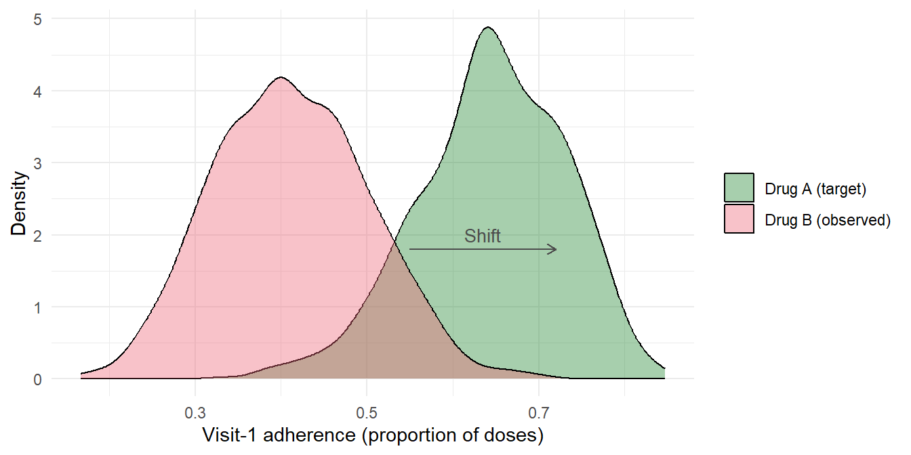

set.seed(2026)
n <- 2000
T_max <- 4
# --- Baseline ---
W_age <- rnorm(n, 38, 10)
W_male <- rbinom(n, 1, 0.6)
W_cd4_bl <- pmax(50, rnorm(n, 400, 130))
W_vl_bl <- rnorm(n, 4.0, 0.6) # log10 viral load
Drug <- rbinom(n, 1, 0.5) # 1 = Drug A, 0 = Drug B
# --- Containers ---
L_cd4 <- matrix(NA, n, T_max)
L_vl <- matrix(NA, n, T_max)
A_adh <- matrix(NA, n, T_max)
C_cens <- matrix(0, n, T_max)
alive <- rep(TRUE, n)
for (t in 1:T_max) {
# Previous values
if (t == 1) {
cd4_prev <- W_cd4_bl
vl_prev <- W_vl_bl
adh_prev <- ifelse(Drug == 1, rbeta(n, 8, 2), rbeta(n, 5, 3))
} else {
cd4_prev <- L_cd4[, t - 1]
vl_prev <- L_vl[, t - 1]
adh_prev <- A_adh[, t - 1]
cd4_prev[is.na(cd4_prev)] <- W_cd4_bl[is.na(cd4_prev)]
vl_prev[is.na(vl_prev)] <- W_vl_bl[is.na(vl_prev)]
adh_prev[is.na(adh_prev)] <- 0.5
}
# Time-varying CD4: improves with adherence, Drug A has slight advantage
L_cd4[, t] <- pmax(50,
cd4_prev + rnorm(n, mean = 40 * adh_prev + 10 * Drug - 15 * (1 - adh_prev), sd = 35) +
-0.3 * (W_age - 38)
)
# Time-varying viral load: decreases with adherence
L_vl[, t] <- pmax(0,
vl_prev + rnorm(n, mean = -1.5 * adh_prev - 0.2 * Drug + 0.3 * (1 - adh_prev), sd = 0.3)
)
# Adherence: Drug A patients adhere better; CD4 response feeds back
lp_adh <- 0.8 * Drug +
0.3 * adh_prev +
0.001 * (L_cd4[, t] - 400) +
-0.2 * L_vl[, t] +
-0.005 * (W_age - 38) +
0.1 * W_male +
rnorm(n, 0, 0.3)
# Map to (0, 1) via scaled logistic
A_adh[, t] <- plogis(lp_adh)
# Censoring: informative (low CD4, high VL, low adherence increase dropout)
# Censoring indicator: lmtp expects 1 = uncensored (still observed), 0 = censored
lp_cens <- -4.5 +
-0.002 * L_cd4[, t] +
0.4 * L_vl[, t] +
-0.8 * A_adh[, t] +
0.3 * (1 - Drug)
censored_now <- rbinom(n, 1, plogis(lp_cens)) * alive
C_cens[, t] <- 1 - censored_now # flip: 1=observed, 0=censored
alive <- alive & (censored_now == 0)
# Set future to NA for censored
if (t < T_max) {
idx_gone <- !alive
A_adh[idx_gone, (t + 1):T_max] <- NA
L_cd4[idx_gone, (t + 1):T_max] <- NA
L_vl[idx_gone, (t + 1):T_max] <- NA
C_cens[idx_gone, (t + 1):T_max] <- NA
}
}
# --- Outcome: virologic failure ---
cum_adh <- rowMeans(A_adh, na.rm = TRUE)
final_vl <- apply(L_vl, 1, function(x) { v <- x[!is.na(x)]; if (length(v)) tail(v, 1) else NA })
final_cd4 <- apply(L_cd4, 1, function(x) { v <- x[!is.na(x)]; if (length(v)) tail(v, 1) else NA })
lp_y <- -1.0 +
-2.0 * cum_adh +
0.5 * final_vl +
-0.002 * final_cd4 +
-0.3 * Drug +
0.3 * W_vl_bl
Y <- rbinom(n, 1, plogis(lp_y))
Y[!alive] <- NA
cat("N:", n, "\n")
#> N: 2000
cat("Drug A:", sum(Drug == 1), " Drug B:", sum(Drug == 0), "\n")
#> Drug A: 983 Drug B: 1017
cat("Censored:", sum(!alive), "(", round(100 * mean(!alive), 1), "%)\n")
#> Censored: 87 ( 4.3 %)
cat("Failure rate (uncensored) Drug A:",
round(mean(Y[alive & Drug == 1]), 3), "\n")
#> Failure rate (uncensored) Drug A: 0.07
cat("Failure rate (uncensored) Drug B:",
round(mean(Y[alive & Drug == 0]), 3), "\n")
#> Failure rate (uncensored) Drug B: 0.356
cat("Mean adherence Drug A:", round(mean(cum_adh[Drug == 1], na.rm = TRUE), 3), "\n")
#> Mean adherence Drug A: 0.703
cat("Mean adherence Drug B:", round(mean(cum_adh[Drug == 0], na.rm = TRUE), 3), "\n")
#> Mean adherence Drug B: 0.43916 Comparing Drugs Under Realistic Adherence: An LMTP Case Study
Distribution-shift interventions, informative censoring, and treatment switching in an HIV cohort
Estimated reading time: 55 minutes
Learning objectives
- Define a distribution-shift intervention (modified treatment policy) and explain how it differs from static and dynamic regimes
- Implement a quantile-mapping shift function for use with the
lmtppackage - Estimate causal effects of realistic adherence interventions using
lmtp_sdr()with censoring adjustment - Interpret LMTP contrasts in terms of adherence-mediated drug effects versus pharmacological effects
- Handle informative censoring and intercurrent events (monitoring changes, treatment switching) within the LMTP framework
- Compare L-TMLE and LMTP in terms of the interventions they target, positivity demands, and practical trade-offs
17 Where This Chapter Fits
The previous chapter demonstrated L-TMLE for a static “always adhere” intervention. That approach is pedagogically clear and methodologically clean, but it has a practical limitation: no real-world program achieves 100% adherence. This chapter moves beyond static regimes to address a more realistic and policy-relevant question using the LMTP framework (Dı́az et al. 2023).
We compare two antiretroviral drugs in terms of virologic failure, but instead of asking “what if everyone adhered perfectly?”, we ask: what if the adherence distribution observed under one drug applied to patients taking the other drug? This is a distribution-shift intervention, a causal question about what would happen if we could transplant the real-world adherence behavior from one treatment arm into the other, while leaving everything else (including the drug assignment) unchanged.
This question cannot be framed as a standard static or dynamic regime. It requires the modified treatment policy machinery that lmtp provides.
18 Why Static Adherence Interventions Are Often Unrealistic
The L-TMLE chapter estimated \(E[Y(\bar{a} = \bar{1})]\), the counterfactual outcome if every patient maintained high adherence at every visit. In practice, this estimand has two problems.
First, it violates positivity. Some patients essentially never achieve high adherence, whether due to side effects, mental health, substance use, or practical barriers. For these patients, the probability of high adherence conditional on their covariate history is near zero, and the “always adhere” counterfactual requires extrapolating far beyond the support of the observed data.
Second, it is not actionable. No adherence program achieves 100% compliance. Policymakers want to know the benefit of feasible interventions that shift adherence by realistic amounts, not the theoretical maximum under impossible conditions.
Stochastic interventions that shift adherence probabilities are an improvement, but they still do not address a common comparative effectiveness question: if we switch a patient from Drug 1 to Drug 2, what change in outcomes should we expect, given that the two drugs have different real-world adherence profiles?
19 Study Question
Consider an HIV cohort where patients are initiated on one of two antiretroviral regimens:
- Drug A (e.g., a once-daily single-tablet regimen): generally high adherence, but may have metabolic side effects.
- Drug B (e.g., a twice-daily multi-tablet regimen): lower real-world adherence due to pill burden, but favorable metabolic profile.
The observed adherence distributions differ between drugs. Patients on Drug A tend to adhere better. The naive comparison of outcomes between drugs conflates the direct drug effect (pharmacology) with the indirect effect through adherence. We want to separate these by asking:
What would virologic failure rates look like if Drug B patients had the same adherence distribution as Drug A patients, while remaining on Drug B?
And the reverse:
What would virologic failure rates look like if Drug A patients had the same adherence distribution as Drug B patients, while remaining on Drug A?
The contrast between these counterfactual outcomes isolates the role of adherence differences in explaining the observed outcome gap between drugs. It is fundamentally a causal question, not a descriptive standardization, because we are intervening on the adherence process while holding drug assignment fixed.
20 Case Study Setup
20.1 Data structure
We simulate a cohort of patients followed over 4 bimonthly visits (8 months total). At each visit, we observe:
- Drug assignment (\(D\)): fixed at baseline (1 = Drug A, 0 = Drug B).
- CD4 count (\(L_t^{\text{CD4}}\)): time-varying, affected by past adherence and drug.
- Viral load (\(L_t^{\text{VL}}\)): time-varying, affected by past adherence and drug.
- Adherence (\(A_t\)): proportion of doses taken in the interval (continuous, 0–1). Affected by CD4, viral load, drug, side effects, and prior adherence.
- Censoring (\(C_t\)): loss to follow-up (binary). Informative: patients with low CD4, high viral load, and low adherence are more likely to drop out.
- Outcome (\(Y\)): virologic failure (HIV RNA \(\geq\) 200 copies/mL) at the end of follow-up.
Drug A patients have higher mean adherence and lower virologic failure. But how much of the outcome difference is due to Drug A’s pharmacology versus its better adherence profile?
20.2 Prepare analysis data
# LOCF for censored patients: lmtp requires no NA in covariates/treatment.
# The censoring model handles the adjustment; data must be complete.
for (t in 2:T_max) {
na_cd4 <- is.na(L_cd4[, t]); na_vl <- is.na(L_vl[, t]); na_adh <- is.na(A_adh[, t])
L_cd4[na_cd4, t] <- L_cd4[na_cd4, t - 1]
L_vl[na_vl, t] <- L_vl[na_vl, t - 1]
A_adh[na_adh, t] <- A_adh[na_adh, t - 1]
}
dat_wide <- tibble(
Drug = Drug,
age = W_age, male = W_male, cd4_bl = W_cd4_bl, vl_bl = W_vl_bl
)
for (t in 1:T_max) {
dat_wide[[paste0("cd4_", t)]] <- L_cd4[, t]
dat_wide[[paste0("vl_", t)]] <- L_vl[, t]
dat_wide[[paste0("A_", t)]] <- A_adh[, t]
dat_wide[[paste0("C_", t)]] <- C_cens[, t]
}
dat_wide$Y <- ifelse(is.na(Y), 0, Y) # censored Y set to 0; censoring model handles it
glimpse(dat_wide)
#> Rows: 2,000
#> Columns: 22
#> $ Drug <int> 0, 1, 0, 1, 1, 0, 0, 0, 1, 0, 0, 1, 0, 0, 1, 0, 0, 0, 1, 0, 0, …
#> $ age <dbl> 43.20589, 27.20309, 39.39238, 37.15251, 31.33360, 12.83911, 30.…
#> $ male <int> 1, 1, 1, 1, 1, 1, 1, 0, 1, 0, 0, 1, 1, 0, 1, 0, 1, 1, 1, 1, 0, …
#> $ cd4_bl <dbl> 279.34196, 431.02368, 629.69371, 358.35140, 407.14543, 522.4105…
#> $ vl_bl <dbl> 4.617154, 4.525064, 4.349513, 4.231862, 3.188875, 3.721043, 3.5…
#> $ cd4_1 <dbl> 317.52788, 443.19675, 624.49085, 375.28529, 383.53724, 506.5182…
#> $ vl_1 <dbl> 4.2315985, 3.3353203, 3.2027211, 2.6623889, 2.2322146, 2.950551…
#> $ A_1 <dbl> 0.2905280, 0.6589655, 0.4798130, 0.5103203, 0.7074939, 0.446579…
#> $ C_1 <dbl> 1, 1, 1, 1, 1, 1, 1, 1, 1, 1, 1, 1, 1, 1, 1, 1, 1, 1, 1, 1, 1, …
#> $ cd4_2 <dbl> 307.44744, 442.11164, 605.32463, 351.81610, 401.76990, 552.0013…
#> $ vl_2 <dbl> 3.1498486, 1.8097656, 2.2436355, 2.2740136, 0.9112737, 2.473874…
#> $ A_2 <dbl> 0.4203691, 0.6609450, 0.5772661, 0.5519154, 0.7477498, 0.575396…
#> $ C_2 <dbl> 1, 1, 1, 1, 1, 1, 1, 1, 1, 1, 1, 1, 1, 1, 1, 1, 1, 1, 1, 1, 1, …
#> $ cd4_3 <dbl> 321.75475, 549.63959, 638.72058, 424.94576, 399.63125, 540.4918…
#> $ vl_3 <dbl> 2.4083628, 0.7554073, 1.4921955, 1.5834192, 0.1902632, 1.442674…
#> $ A_3 <dbl> 0.4323012, 0.7188332, 0.3966074, 0.7219766, 0.7841258, 0.644728…
#> $ C_3 <dbl> 1, 1, 1, 1, 1, 1, 1, 1, 1, 1, 1, 1, 1, 1, 1, 1, 1, 1, 1, 1, 1, …
#> $ cd4_4 <dbl> 295.99866, 597.46637, 640.17006, 422.82386, 426.02855, 559.1478…
#> $ vl_4 <dbl> 1.42265127, 0.00000000, 1.16384147, 0.59537912, 0.00000000, 0.0…
#> $ A_4 <dbl> 0.3623809, 0.7496941, 0.4995513, 0.7572648, 0.7459361, 0.652929…
#> $ C_4 <dbl> 1, 1, 1, 1, 1, 1, 1, 1, 1, 1, 1, 1, 1, 1, 1, 1, 1, 1, 1, 1, 1, …
#> $ Y <dbl> 0, 0, 1, 0, 0, 0, 0, 1, 0, 0, 0, 0, 1, 0, 0, 1, 0, 1, 0, 0, 0, …21 The Causal Estimand
We define two counterfactual quantities. Let \(A_t^{d=1}\) denote the adherence that a patient would have exhibited if their drug assignment were Drug A (i.e., the adherence distribution observed under Drug A). The first estimand is:
\[ \psi_{\text{shift}} = E\big[Y\big(\text{Drug B}, \; \bar{A}^{d_A}\big)\big] \]
In words: the expected virologic failure rate among Drug B patients if their adherence at each visit were shifted to follow the distribution observed among Drug A patients with similar covariate histories.
The contrast of interest compares this to the observed outcome under Drug B:
\[ \Delta = E\big[Y\big(\text{Drug B}, \; \bar{A}^{d_A}\big)\big] - E\big[Y\big(\text{Drug B}, \; \bar{A}^{\text{obs}}\big)\big] \]
If \(\Delta < 0\), then giving Drug B patients the adherence behavior of Drug A patients would reduce virologic failure, quantifying how much of the Drug A advantage comes from better adherence rather than pharmacology.
This is a causal question, not a descriptive standardization. We are hypothetically intervening on the adherence process, asking what would happen if we could change each Drug B patient’s adherence to what it would have been under Drug A, given their clinical history, while holding the drug assignment fixed. The time-varying confounders (CD4, viral load) would also change under this intervention because adherence affects them.
22 Why LMTP Is the Right Tool
The L-TMLE chapter dealt with static interventions: set \(A_t = 1\) for everyone. Here, the intervention is fundamentally different. We are not setting adherence to a fixed value; we are shifting the adherence distribution. The intervened adherence value for a Drug B patient depends on their natural adherence value and on the adherence distribution of Drug A patients with similar characteristics.
LMTP (longitudinal modified treatment policies) handles exactly this type of intervention. In the LMTP framework, the shift function \(d(a_t, h_t)\) maps the natural treatment value \(a_t\) and the patient’s history \(h_t\) to an intervened value. This function can depend on the patient’s actual treatment, making it suitable for distribution-shift interventions.
# Illustrate the two adherence distributions
adh_a <- A_adh[Drug == 1, 1]
adh_b <- A_adh[Drug == 0, 1]
tibble(
Adherence = c(adh_a, adh_b),
Drug = rep(c("Drug A (target)", "Drug B (observed)"), c(length(adh_a), length(adh_b)))
) %>%
ggplot(aes(x = Adherence, fill = Drug)) +
geom_density(alpha = 0.4) +
labs(x = "Visit-1 adherence (proportion of doses)", y = "Density",
fill = NULL) +
scale_fill_manual(values = c("Drug A (target)" = "#228833",
"Drug B (observed)" = "#EE6677")) +
theme_minimal() +
annotate("segment", x = 0.55, xend = 0.72, y = 1.8, yend = 1.8,
arrow = arrow(length = unit(0.2, "cm")), color = "grey30") +
annotate("text", x = 0.635, y = 2.0, label = "Shift", color = "grey30", size = 3.5)
23 Implementing the Shift Intervention
The shift function needs to operationalize “make Drug B adherence look like Drug A adherence.” We use a quantile-mapping approach: for each Drug B patient at each visit, we find where their adherence falls in the Drug B distribution and map it to the corresponding quantile of the Drug A distribution. This preserves the rank ordering of patients while shifting the entire distribution.
# Precompute empirical CDFs of adherence by drug at each time point
# For the shift function, we need the Drug A and Drug B distributions
adh_ecdf_A <- list()
adh_ecdf_B <- list()
adh_quantile_A <- list()
for (t in 1:T_max) {
col <- paste0("A_", t)
vals_A <- dat_wide[[col]][dat_wide$Drug == 1 & !is.na(dat_wide[[col]])]
vals_B <- dat_wide[[col]][dat_wide$Drug == 0 & !is.na(dat_wide[[col]])]
adh_ecdf_B[[t]] <- ecdf(vals_B)
# For mapping: quantile function of Drug A distribution
adh_quantile_A[[t]] <- function(p, v = vals_A) quantile(v, probs = p, type = 7)
}The shift function for lmtp:
# Shift function: for Drug B patients, map adherence from Drug B distribution
# to corresponding quantile of Drug A distribution.
# Drug A patients are left unchanged.
shift_to_drug_a <- function(data, trt) {
# Determine which time point this is
t_idx <- as.integer(gsub("A_", "", trt))
a_obs <- data[[trt]]
# For Drug B patients: quantile mapping
is_drug_b <- data$Drug == 0
a_shifted <- a_obs
if (any(is_drug_b & !is.na(a_obs))) {
# Find percentile rank in Drug B distribution
vals_B <- a_obs[is_drug_b & !is.na(a_obs)]
p_rank <- adh_ecdf_B[[t_idx]](vals_B)
# Clamp to avoid edge effects
p_rank <- pmax(0.01, pmin(0.99, p_rank))
# Map to Drug A quantile
a_shifted[is_drug_b & !is.na(a_obs)] <- adh_quantile_A[[t_idx]](p_rank)
}
return(a_shifted)
}This is a genuine distributional intervention. It does not set adherence to a fixed value. Instead, it shifts the entire adherence distribution of Drug B patients toward that of Drug A patients, using quantile mapping to preserve rank ordering. A patient who was at the 30th percentile of Drug B adherence gets mapped to the 30th percentile of Drug A adherence.
The intervention is well-defined and respects positivity: the shifted values lie within the observed range of Drug A adherence, so we are not extrapolating beyond the support of the data.
23.1 Quantile-matching for drug comparison
The shift function above implements a specific version of quantile-matching tailored to this two-drug comparison. Here we present the general implementation pattern from the V4 simulation, which can be adapted to any pair of treatment groups.
The idea is straightforward: for each patient on drug \(d\), find their percentile rank in drug \(d\)’s adherence distribution at each time point, then map that percentile to the reference drug’s distribution. This creates a counterfactual adherence trajectory that preserves the patient’s relative position (a “good adherer” stays a “good adherer”) while transplanting them into the reference drug’s adherence profile.
The implementation has three steps:
- Build empirical CDFs for each drug at each time point from the observed data.
- For each patient on the “from” drug, compute their quantile in the “from” distribution using the empirical CDF.
- Map that quantile to the “to” drug’s distribution, using the sorted observed values as a discrete quantile function.
# Build quantile-matching shift function
make_quantile_shift <- function(dat, from_drug, to_drug, trt_cols) {
ecdf_from <- list()
vals_to <- list()
for (t in seq_along(trt_cols)) {
col <- trt_cols[t]
ecdf_from[[t]] <- ecdf(dat[[col]][dat$drug == from_drug])
vals_to[[t]] <- sort(dat[[col]][dat$drug == to_drug])
}
function(data, trt) {
t_idx <- match(trt, trt_cols)
pdc <- data[[trt]]
q <- ecdf_from[[t_idx]](pdc)
quantile(vals_to[[t_idx]], probs = q, type = 1)
}
}This factory function returns a closure that captures the pre-computed ECDFs and sorted reference values. The returned function has the (data, trt) signature that lmtp expects. A few important details:
type = 1inquantile()uses the inverse empirical CDF (nearest-rank method), which ensures the shifted values are always observed values from the reference drug. This avoids interpolation artifacts and keeps the shifted distribution exactly within the support of the reference drug’s data.- The shift is deterministic given the observed data. Once the ECDFs are built, every patient gets a unique shifted value based on their percentile rank. This makes the shift a modified treatment policy in the LMTP sense: the shifted value depends on the natural value.
- The
match(trt, trt_cols)call identifies which time point is being shifted.lmtpcalls the shift function separately for each treatment column, passing the column name astrt.
To use this in an LMTP analysis:
# Create shift: map Drug B adherence to Drug A distribution
shift_b_to_a <- make_quantile_shift(
dat = dat_wide,
from_drug = 0, # Drug B
to_drug = 1, # Drug A
trt_cols = paste0("A_", 1:T_max)
)
# Fit under shifted adherence
fit_shifted <- lmtp_tmle(
data = dat_wide,
trt = trt_vars,
outcome = "Y",
baseline = baseline,
time_vary = time_vary,
cens = cens_vars,
shift = shift_b_to_a,
mtp = TRUE,
outcome_type = "binomial",
learners_trt = c("SL.glm"),
learners_outcome = c("SL.glm"),
folds = 5
)
# Fit under natural (observed) adherence
fit_natural <- lmtp_tmle(
data = dat_wide,
trt = trt_vars,
outcome = "Y",
baseline = baseline,
time_vary = time_vary,
cens = cens_vars,
shift = shift_identity,
mtp = TRUE,
outcome_type = "binomial",
learners_trt = c("SL.glm"),
learners_outcome = c("SL.glm"),
folds = 5
)
# Contrast: effect of matching Drug B adherence to Drug A
contrast <- lmtp::lmtp_contrast(fit_shifted, ref = fit_natural, type = "additive")
tidy_contrast <- lmtp::tidy(contrast)The contrast answers: “How much would Drug B’s failure rate change if its patients adhered like Drug A patients?” A negative value means the adherence shift reduces failure, implying that part of Drug A’s observed advantage comes from its better adherence profile rather than from pharmacological superiority alone.
This approach generalizes to any pair of treatment groups. To compare Drug A’s outcomes under Drug B’s adherence pattern (the reverse direction), simply swap from_drug and to_drug. The two directional contrasts need not be symmetric; the effect of degrading Drug A’s adherence to Drug B levels may differ in magnitude from the effect of improving Drug B’s adherence to Drug A levels, because the forgiveness curve is typically nonlinear.
24 LMTP Estimation
We use lmtp_sdr() (the sequentially doubly robust estimator) which provides the same double-robustness guarantees as L-TMLE but is designed for the broader class of modified treatment policies.
library(lmtp)
# Variable names
trt_vars <- paste0("A_", 1:T_max)
cens_vars <- paste0("C_", 1:T_max)
baseline <- c("Drug", "age", "male", "cd4_bl", "vl_bl")
# Time-varying covariates: CD4 and VL at each visit
time_vary <- lapply(1:T_max, function(t) c(paste0("cd4_", t), paste0("vl_", t)))
# Identity shift for observed (reference) estimate
shift_identity <- function(data, trt) data[[trt]]
# --- Shifted outcome: Drug B adherence -> Drug A distribution ---
result_shifted <- lmtp_sdr(
data = dat_wide,
trt = trt_vars,
outcome = "Y",
baseline = baseline,
time_vary = time_vary,
cens = cens_vars,
shift = shift_to_drug_a,
mtp = TRUE,
outcome_type = "binomial",
learners_outcome = c("SL.glm", "SL.mean"),
learners_trt = c("SL.glm", "SL.mean"),
folds = 2
)
# --- Observed outcome (identity shift) ---
result_observed <- lmtp_sdr(
data = dat_wide,
trt = trt_vars,
outcome = "Y",
baseline = baseline,
time_vary = time_vary,
cens = cens_vars,
shift = shift_identity,
mtp = TRUE,
outcome_type = "binomial",
learners_outcome = c("SL.glm", "SL.mean"),
learners_trt = c("SL.glm", "SL.mean"),
folds = 2
)
# --- Contrast ---
contrast <- lmtp_contrast(result_shifted, ref = result_observed, type = "additive")
contrast#>
#> shift ref estimate std.error conf.low conf.high p.value
#> 1 0.0429 0.218 -0.175 0.0318 -0.237 -0.113 <0.001Key arguments:
shift = shift_to_drug_a: the distribution-shift function defined above. For Drug B patients, it maps adherence to the Drug A distribution via quantile mapping. Drug A patients are left unchanged.cens = cens_vars: tellslmtpto model the censoring mechanism separately. Loss to follow-up is informative in this cohort (patients with low CD4 and high viral load drop out more), so modeling censoring is essential for unbiased estimation.lmtp_sdr(): the sequentially doubly robust estimator. It constructs the same backwards sequential regressions as L-TMLE but is designed for the modified treatment policy class of interventions.lmtp_contrast(): computes the additive difference between the shifted and observed outcomes with a valid confidence interval.
Note on LMTP API
The code above uses lmtp_sdr(), which is the sequentially doubly robust estimator. The V4 simulation code uses lmtp::lmtp_tmle() instead, which targets the same estimand via a TMLE-based update rather than the one-step SDR correction. Both are valid; lmtp_tmle() can offer better finite-sample performance in some settings. Key differences in the V4 calling convention:
- Estimator:
lmtp_tmle()rather thanlmtp_sdr(). The arguments are identical. - Survival outcomes: When
outcome_type = "survival",lmtpreturns P(survival). To obtain risk, computerisk = 1 - theta. Uselmtp::tidy(fit)to extract the point estimate, standard error, and confidence interval in a tidy data frame. - Shift function signature: Shift functions take
(data, trt)and return the shifted treatment vector. This is the same signature used in this chapter. - Contrasts:
lmtp::lmtp_contrast(fit_shifted, ref = fit_natural, type = "additive")computes the additive risk difference with a valid Wald-type confidence interval. - Super Learner libraries: In practice, use
learners_trtandlearners_outcomewith a richer library (e.g.,c("SL.glm", "SL.ranger", "SL.earth")). TheSL.glm-only specification here is for pedagogical speed.
If you are working with the current CRAN version of lmtp (>= 1.4), the API shown here remains correct. The mtp = TRUE flag is required for any shift function that depends on the natural value of treatment.
25 Interpreting the Contrast
The contrast \(\hat{\Delta}\) estimates the change in virologic failure rate among Drug B patients if their adherence distribution were shifted to match Drug A’s. A negative value means the shift reduces failure.
When interpreting, several points deserve emphasis.
Same drug, different adherence. The patients remain on Drug B. Only their adherence behavior changes. This isolates the adherence pathway: how much of Drug B’s observed disadvantage is because patients adhere less, rather than because the drug is pharmacologically inferior?
Realistic adherence, not perfect adherence. The target distribution is Drug A’s observed adherence, not 100%. Some Drug A patients have low adherence too. The intervention asks for a realistic redistribution, not an impossible ideal.
Causal, not descriptive. This is not the same as reweighting Drug B outcomes to match Drug A adherence in a descriptive analysis. The LMTP framework models the interventional distribution of time-varying confounders under the shift. When we change adherence, CD4 and viral load change too (because adherence affects them), and those changes affect the outcome.
What remains drug-specific. The drug’s direct pharmacological effect (on viral resistance, metabolism, etc.) is held at its Drug B value. Only the adherence process is shifted.
26 Informative Censoring
Loss to follow-up in HIV cohorts is rarely random. Patients who are doing poorly (declining CD4, rising viral load, low adherence) are more likely to disengage from care. If censoring is ignored or treated as non-informative, outcomes among the remaining patients paint an overly optimistic picture.
The lmtp framework handles informative censoring by modeling the censoring mechanism at each time point: \(P(C_t = 0 \mid \bar{A}_{t}, \bar{L}_t, W)\). Patients who remain uncensored despite having high-risk profiles receive additional weight in the estimation, correcting for the differential dropout.
In our simulation, censoring probability increases with low CD4, high viral load, and low adherence. Without censoring adjustment, the estimated failure rate would be biased downward because the uncensored sample is enriched for healthier, more adherent patients.
26.1 Intercurrent events in practice
Real HIV cohort analyses face complications beyond time-varying confounding and informative censoring. Monitoring intensity changes, treatment switching, and competing risks are all intercurrent events: things that happen after treatment initiation and affect either the treatment process, the outcome process, or our ability to observe the outcome.
Consider the extended DAG structure at each visit:
\[ W \to D \to \big(L_t, M_t, S_t, R_t\big) \to A_t \to C_t \to Y_t \]
where \(M_t\) denotes monitoring intensity (e.g., visit frequency, lab ordering patterns), \(S_t\) denotes treatment switching, and \(R_t\) denotes competing risks (e.g., death from non-HIV causes). Each of these nodes feeds back into subsequent time-varying confounders and adherence, creating additional pathways that must be handled for valid causal inference.
L-TMLE and LMTP handle these intercurrent events through the same sequential regression machinery, incorporating them as additional nodes in the longitudinal data structure:
- Monitoring intensity enters as a time-varying covariate in \(L_t\). If monitoring is informative (sicker patients are seen more often, which affects measured adherence), including it in the covariate set adjusts for this pathway.
- Treatment switching can be handled as a censoring event (censor at switch) or as a time-varying covariate, depending on the estimand. See the Treatment Switching section below.
- Competing risks enter as additional censoring indicators. If death from non-HIV causes is informative (related to the same confounders that affect virologic failure), the censoring model adjusts for this.
The key insight is that the sequential regression structure does not change when intercurrent events are added; only the node set grows. Each additional node requires a correctly specified nuisance model, but the identification strategy and estimation machinery remain the same. The target quantity remains the counterfactual risk under the hypothetical adherence intervention, now adjusted for both time-varying confounding and intercurrent events.
| Intercurrent Event | Challenge | LMTP / L-TMLE Handling |
|---|---|---|
| Monitoring intensity changes | Informative visit patterns affect measured adherence | Include as time-varying covariate in \(L_t\); model in outcome and treatment regressions |
| Treatment switching | Post-baseline drug change confounded with clinical deterioration | Censor at switch with informative censoring model, or include switch indicator in \(L_t\) |
| Competing risks (non-HIV death) | Removes patients from risk set informatively | Additional censoring node at each visit; censoring model adjusts for shared confounders |
| Dose modifications | Partial treatment changes within a regimen | Model modified dose as the treatment node; shift function operates on actual dose received |
| Loss to follow-up | Informative dropout correlated with adherence and health | Censoring model with cens argument; inverse-probability weighting corrects for differential attrition |
For a more detailed treatment of the intercurrent events DAG in the context of this HIV adherence simulation, see the V4 talk companion document, which visualizes the extended causal structure and demonstrates how each intercurrent event affects the estimation strategy.
27 Treatment Switching
In practice, some patients switch drugs during follow-up. A Drug B patient whose viral load rises may be switched to Drug A (or a third regimen). Switching complicates the analysis in two ways.
First, it changes the treatment being received, so the “drug effect” after the switch is a mix of Drug B and the new regimen. Second, switching is informative: it is triggered by clinical deterioration, the same factors that predict the outcome.
There are several ways to handle switching in the LMTP framework:
Censor at switch. Treat the switch as a censoring event and adjust for informative censoring. This estimates the outcome under a hypothetical intervention where switching does not occur. It is the simplest approach but requires that the “no switching” counterfactual is well-defined.
Include switching as a time-varying covariate. If the question is about the adherence distribution rather than the drug itself, switching can be modeled as part of the covariate process. This approach estimates outcomes under the adherence shift regardless of whether patients switch.
Model switching as part of the intervention. If the shift function should account for drug changes, it can be redefined to handle the switch explicitly.
In our simulation we did not include switching for clarity, but in a real analysis the choice among these approaches should be guided by the scientific question and stated explicitly.
28 Lessons Learned: L-TMLE versus LMTP
The two estimation chapters cover complementary tools for longitudinal causal inference. Here is when to reach for each.
L-TMLE (Chapter 3.9) is the right choice when the intervention is a standard static or dynamic regime (“always treat,” “treat if CD4 drops below 200,” or similar rules that assign a deterministic treatment value at each visit). The ltmle package is mature, well-documented, and handles binary/continuous treatments with censoring.
LMTP (this chapter) is the right choice when the intervention is a modified treatment policy: a shift, a distributional change, or any rule where the intervened treatment value depends on the patient’s natural (observed) treatment value. It is also the better choice when positivity is a concern, because shift interventions stay closer to the observed data support.
The two methods share the same identification assumptions and the same backwards sequential regression structure. They differ in the class of interventions they can target. For any given analysis, the choice depends on the causal question.
| Feature | L-TMLE (ltmle) |
LMTP (lmtp) |
|---|---|---|
| Static regimes | Yes | Yes |
| Dynamic regimes | Yes (via rule functions) | Yes (via shift functions) |
| Stochastic / distributional interventions | No | Yes |
| Positivity demands | Higher (forces treatment values) | Lower (stays near observed data) |
| Doubly robust | Yes (at each time step) | Yes (sequentially doubly robust) |
| Cross-fitting built in | Manual or via cvtmle |
Built in |
| Survival outcomes | Yes | Yes (with event_locf) |
| Censoring adjustment | Yes | Yes |
28.1 Connection to the forgiveness curve
The shift analysis in this chapter gives one point on a broader picture. A single LMTP contrast tells us: “if we shift Drug B adherence to Drug A’s distribution, failure changes by \(\Delta\).” But the relationship between adherence and failure is not a single number; it is a curve. The forgiveness curve maps sustained PDC levels to virologic failure risk, and different drugs trace different curves because of their pharmacological properties (half-life, resistance barrier, potency).
The forgiveness curve has the form:
\[ r(a) = P\big(Y = 1 \mid \text{do}(\bar{A} = a), D = d\big) \]
where \(a\) is a sustained PDC level and \(d\) indexes the drug. A “forgiving” drug has a flat curve across a wide range of PDC, where failure risk stays low even when adherence drops moderately. A less forgiving drug has a steep curve, where small drops in adherence produce large increases in risk.
The shift analysis and the forgiveness curve connect in several ways:
The shift gives a weighted average over the curve. The LMTP contrast integrates over the forgiveness curve, weighting by the shifted adherence distribution. It does not tell you the shape of the curve at any particular PDC level.
Quantile-matching isolates the pharmacological effect from the adherence effect. When we match Drug B’s adherence distribution to Drug A’s, we are asking: holding the position on the curve constant, how do the two curves differ? If the contrast is small after matching, the drugs have similar forgiveness profiles; the observed outcome difference was driven by the adherence distribution, not the curve shape.
Static L-TMLE traces the curve directly. By running L-TMLE at a grid of fixed PDC thresholds (e.g., “always maintain PDC \(\geq a\)” for \(a \in \{0.50, 0.55, \ldots, 0.95\}\)), we can trace out the forgiveness curve. This is the approach taken in the V4 fine-grid LTMLE analysis, which uses 13 sliding bins to map the relationship between sustained PDC and failure risk.
Support determines where the curve is well-estimated. The forgiveness curve can only be reliably estimated in regions where there is adequate positivity (enough patients at each PDC level given their covariate history). In the V4 Monte Carlo results, the curve is well-estimated for PDC \(\geq 0.70\) but breaks down at lower levels where few patients sustain very low adherence for extended periods.
LMTP shift has low bias when it stays within support. The V4 MC simulations under strong time-varying confounding show that the LMTP additive shift estimator maintains low bias (\(< 0.01\)) as long as the shift magnitude keeps the post-intervention distribution within the support of the observed data. Larger shifts that push patients outside the support region show increasing bias, just as static regimes do when they impose adherence levels that are rare in the observed data.
The forgiveness curve is thus the unifying object: static regimes trace it, additive shifts move along it, and quantile-matching compares curves across drugs. All three are functions of the same counterfactual risk surface \(P(Y \mid \text{do}(\bar{A}), D)\), evaluated at different points or integrated over different distributions.
28.2 Connection to the running case study
The HAART cohort from the Running Case Study has the same core structure as the simulation used here: a longitudinal treatment (haartind) that affects a time-varying confounder (cd4.sqrt), which in turn affects future treatment and the outcome (event). The HAART data additionally includes informative censoring (dropout) driven by clinical deterioration. While the HAART cohort involves a single drug with binary adherence, the LMTP framework demonstrated here extends naturally to that setting, for example, by defining a stochastic shift that increases the probability of HAART initiation at each visit by a fixed amount, or by comparing outcomes under observed versus hypothetical adherence patterns. The key methodological points (distribution-shift interventions, censoring adjustment, quantile-mapping shift functions) all transfer directly.
Sensitivity analysis: negative control outcomes
A practical diagnostic for unmeasured confounding is to apply the same LMTP pipeline to a negative control outcome, one that should not be affected by adherence (e.g., accidental injury rates in the HIV cohort). If the estimated adherence shift effect on the negative control outcome is close to zero, this is reassuring. A substantial effect suggests residual confounding that may also bias the primary analysis. This diagnostic is especially valuable when sequential exchangeability is uncertain.
28.3 Check your understanding
Q1. Why is a distribution-shift intervention preferred over a static “always adhere” regime for comparing drugs?
A static “always adhere” regime forces every patient to the same adherence level, which violates positivity for patients who cannot realistically achieve high adherence. A distribution-shift intervention stays within the observed data support by mapping each patient’s adherence to a plausible value from the target distribution. This respects the real-world adherence patterns and answers a more actionable question: “what if Drug B patients adhered like Drug A patients?” rather than “what if everyone adhered perfectly?”
Q2. The LMTP estimate compares outcomes under shifted versus observed adherence. Is this a per-protocol or intention-to-treat effect?
It is neither in the traditional sense. It is a modified treatment policy effect: the counterfactual outcome under a specific (realistic) intervention on the adherence process. Unlike a per-protocol effect, it does not require perfect adherence. Unlike an intention-to-treat effect, it does intervene on the treatment process. It is closest to a “treatment-policy” effect under a realistic adherence program.
Q3. Why does the LMTP framework need the mtp = TRUE flag?
The mtp = TRUE flag tells lmtp that the shift function depends on the natural (observed) treatment value. Without this flag, lmtp assumes a static intervention where the shifted treatment value is independent of what actually happened. For distribution shifts and quantile mapping, the shifted value is a function of the observed value, so mtp = TRUE is required for correct density ratio estimation.
28.4 Sources and further reading
- Diaz I, Williams N, Hoffman KL, et al. (2023). lmtp: An R package for estimating the causal effects of modified treatment policies. Observational Studies 9:103–122.
- Diaz I, Hejazi NS (2020). Causal mediation analysis for stochastic interventions. JRSS-B 82(3):661–683.
- Haneuse S, Rotnitzky A (2013). Estimation of the effect of interventions that modify the received treatment. Statistics in Medicine 32(30):5260–5277.
- Petersen ML, Schwab J, Gruber S, Blaser N, Schomaker M, van der Laan MJ (2014). Targeted maximum likelihood estimation for dynamic and static longitudinal marginal structural working models. J Causal Inference 2(2):147–185.
lmtpR package: CRANltmleR package: CRAN
Dı́az, Iván, Nicholas Williams, Katherine L Hoffman, and Edward J Schenck. 2023. “Nonparametric Causal Effects Based on Longitudinal Modified Treatment Policies.” Journal of the American Statistical Association 118 (542): 846–56. https://doi.org/10.1080/01621459.2021.1955691.